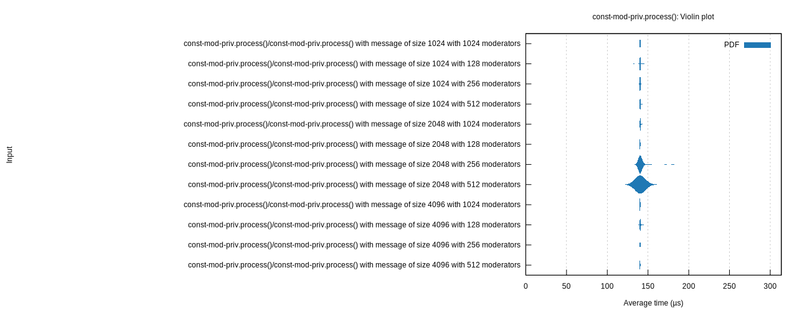

const-mod-priv.process()
Violin Plot
{kind=link}
This chart shows the relationship between function/parameter and iteration time. The thickness of the shaded region indicates the probability that a measurement of the given function/parameter would take a particular length of time.
const-mod-priv.process()/const-mod-priv.process() with message of size 100 with 1 moderators
/const-mod-priv.process() with message of size 100 with 1 moderat/report/pdf.svg)
|
/const-mod-priv.process() with message of size 100 with 1 moderat/report/iteration_times.svg)
|
const-mod-priv.process()/const-mod-priv.process() with message of size 100 with 100 moderators
/const-mod-priv.process() with message of size 100 with 100 moder/report/pdf.svg)
|
/const-mod-priv.process() with message of size 100 with 100 moder/report/iteration_times.svg)
|
const-mod-priv.process()/const-mod-priv.process() with message of size 100 with 1000 moderators
/const-mod-priv.process() with message of size 100 with 1000 mode/report/pdf.svg)
|
/const-mod-priv.process() with message of size 100 with 1000 mode/report/iteration_times.svg)
|
const-mod-priv.process()/const-mod-priv.process() with message of size 100 with 2 moderators
/const-mod-priv.process() with message of size 100 with 2 moderat/report/pdf.svg)
|
/const-mod-priv.process() with message of size 100 with 2 moderat/report/iteration_times.svg)
|
const-mod-priv.process()/const-mod-priv.process() with message of size 100 with 200 moderators
/const-mod-priv.process() with message of size 100 with 200 moder/report/pdf.svg)
|
/const-mod-priv.process() with message of size 100 with 200 moder/report/iteration_times.svg)
|
const-mod-priv.process()/const-mod-priv.process() with message of size 100 with 300 moderators
/const-mod-priv.process() with message of size 100 with 300 moder/report/pdf.svg)
|
/const-mod-priv.process() with message of size 100 with 300 moder/report/iteration_times.svg)
|
const-mod-priv.process()/const-mod-priv.process() with message of size 100 with 400 moderators
/const-mod-priv.process() with message of size 100 with 400 moder/report/pdf.svg)
|
/const-mod-priv.process() with message of size 100 with 400 moder/report/iteration_times.svg)
|
const-mod-priv.process()/const-mod-priv.process() with message of size 100 with 500 moderators
/const-mod-priv.process() with message of size 100 with 500 moder/report/pdf.svg)
|
/const-mod-priv.process() with message of size 100 with 500 moder/report/iteration_times.svg)
|
const-mod-priv.process()/const-mod-priv.process() with message of size 100 with 600 moderators
/const-mod-priv.process() with message of size 100 with 600 moder/report/pdf.svg)
|
/const-mod-priv.process() with message of size 100 with 600 moder/report/iteration_times.svg)
|
const-mod-priv.process()/const-mod-priv.process() with message of size 100 with 64 moderators
/const-mod-priv.process() with message of size 100 with 64 modera/report/pdf.svg)
|
/const-mod-priv.process() with message of size 100 with 64 modera/report/iteration_times.svg)
|
const-mod-priv.process()/const-mod-priv.process() with message of size 100 with 700 moderators
/const-mod-priv.process() with message of size 100 with 700 moder/report/pdf.svg)
|
/const-mod-priv.process() with message of size 100 with 700 moder/report/iteration_times.svg)
|
const-mod-priv.process()/const-mod-priv.process() with message of size 100 with 800 moderators
/const-mod-priv.process() with message of size 100 with 800 moder/report/pdf.svg)
|
/const-mod-priv.process() with message of size 100 with 800 moder/report/iteration_times.svg)
|
const-mod-priv.process()/const-mod-priv.process() with message of size 100 with 900 moderators
/const-mod-priv.process() with message of size 100 with 900 moder/report/pdf.svg)
|
/const-mod-priv.process() with message of size 100 with 900 moder/report/iteration_times.svg)
|